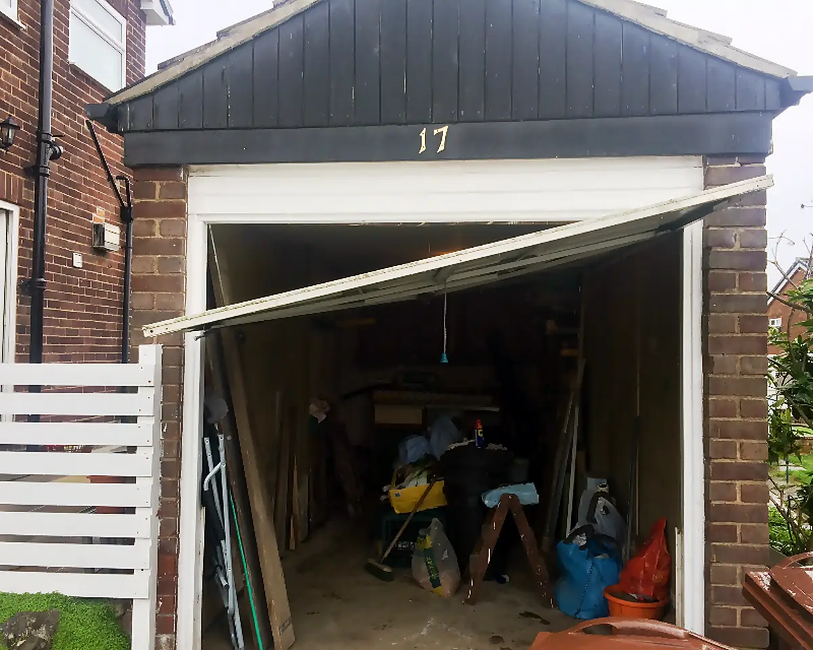
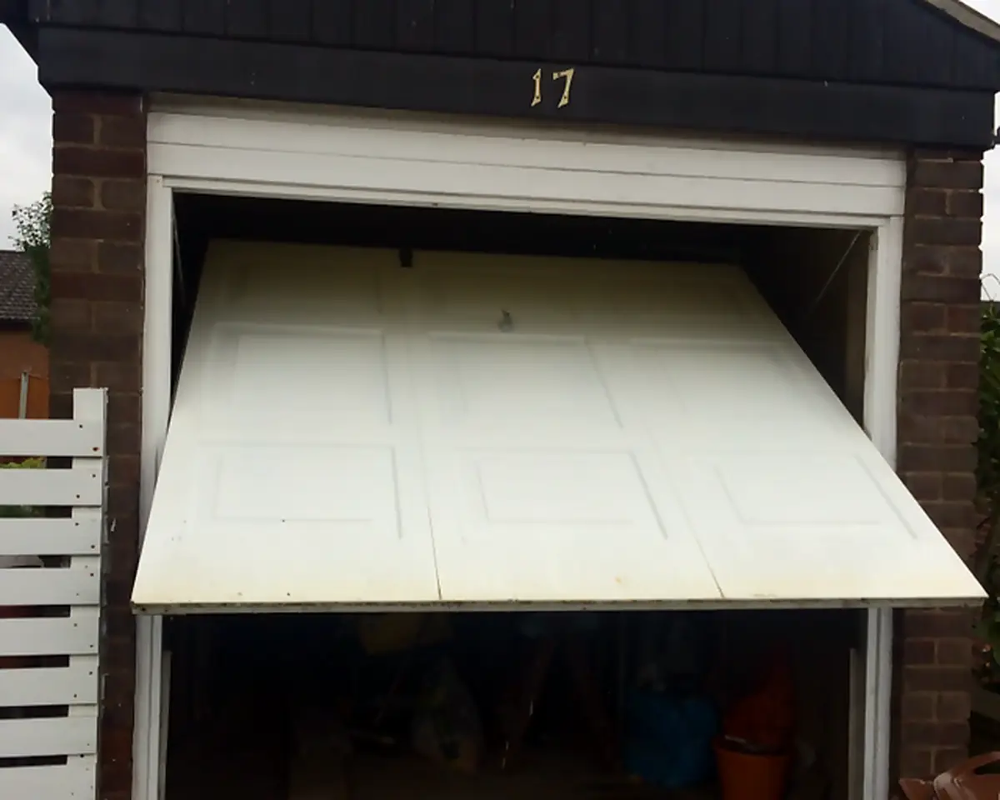
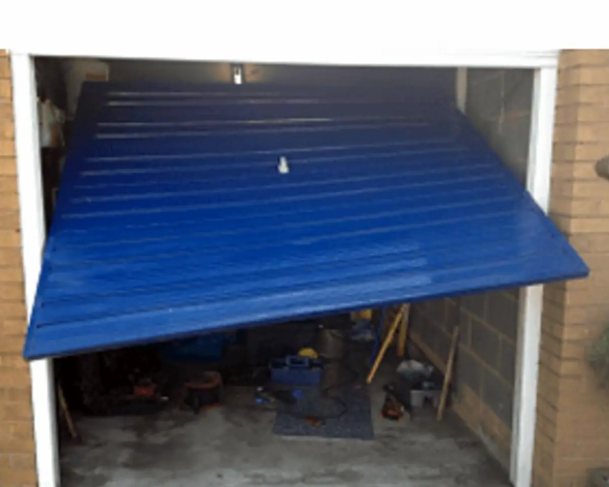
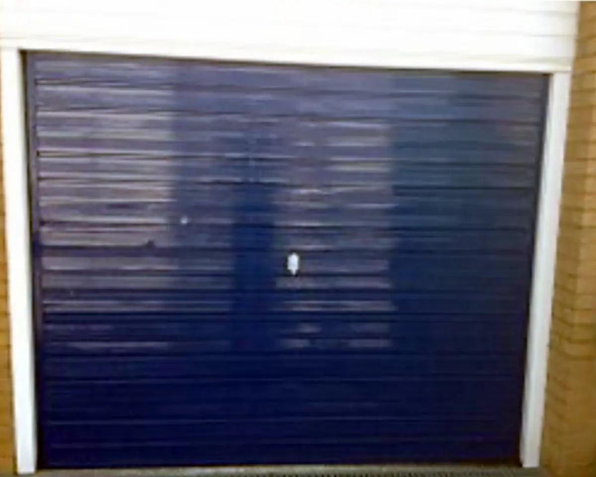

Garage door repairs
Whether it's a mechanical fault, a worn component, a faulty motor or a problem with your remote, Steve will find the fault and get you back up and running wherever possible.
Common garage door faults, put right
Steve repairs and services a wide range of domestic garage doors and mechanisms. These are the problems he deals with most often.
Fault finding
Not sure what's wrong? Steve will track down the cause, whether it's a mechanical fault, a worn part or an electrical problem, and talk you through what's needed to put it right.
Springs and cables
Springs and cables carry the weight of the door. When one snaps or frays, the door can become very heavy, lift unevenly or refuse to open at all.
Locks and handles
Stiff, broken or jammed locks and handles repaired or replaced, so your garage is secure and easy to open again.
Hinges and rollers
Worn hinges and rollers make a door noisy and jerky. Replacing them gets it running quietly and smoothly again.
Doors stuck or off track
If a door has jammed, dropped at one side or come off its track, Steve will get it realigned and running safely.
Faulty motors and operators
Electric door not responding, or the motor running without the door moving? Steve diagnoses and repairs automatic openers. See remotes & automatic doors.
Sticking, noisy or difficult doors
A door that's hard work to open or close usually has an underlying cause. Steve will find it and adjust or repair it.
Door adjustments
Doors that won't close fully, catch on the frame or sit unevenly can often be put right with the correct adjustment.
General mechanical faults
From bent fittings to worn mechanisms, Steve deals with the everyday wear and tear that stops a door working properly.
Stopped working at the worst possible moment?
Garage doors don't always choose a convenient time to stop working. That's why Lift Easy is focused on a reactive, fast-response repair service, with same-day repairs available wherever possible.
One visit to fix it. No wasted trips.
Steve doesn't come out just to take a look. He works out what's wrong first, gives you a price, then arrives with the spares to fix it.
Call or text Steve
Tell Steve what the door is doing and, if you know it, the make of door.
Send a photo
Text or WhatsApp a picture of the door so Steve can zoom in and see the problem. Most people do, and it makes things much easier.
Get a quote
Steve tells you what needs doing and gives you a price to fix it. A service of the door is included in that price.
Fixed in one visit
Steve arrives to fix the problem, carrying the spares needed, so there's no second visit.
No call-out fee
If for whatever reason Steve can't fix your door, there's no charge. He'll recommend someone who can fit a new one.
Pay on completion
You pay once the job is done, by cash, cheque, bank transfer or card.
Service included
Every repair price includes a service of the door, so it's running smoothly when Steve leaves.
Door stuck or a spring gone? Don't force it.
Garage door springs and cables are under a lot of tension. If one has broken, or the door has dropped or come off its track, forcing it can cause more damage, or even injury.
Leave the door where it is, keep people and cars clear of it, and give Steve a call on 07939 500544.
Same door. Working again.
Two jobs from Steve's own photos. In both, the customer kept the door they already had.

Before
After
Before
AfterGarage door makes Steve repairs
With over 30 years' experience, Steve works on many popular makes of domestic garage door, including these, and plenty more.
 Hörmann
Hörmann Garador
Garador Henderson
Henderson Cardale
Cardale Wessex
Wessex Gliderol
Gliderol